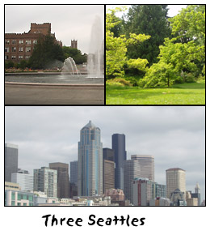

# 123: Another installment of Trials, Triumphs and TrivialitiesJune 19, 2003 Dear Friends, I first started writing these postcards during my trip to Hawaii, back near the end of 2001. At the time I commented on the old writer's saw, "Write what you know", and to a certain extent derided it. Because as a writer, or game designer, you don't actually have to write about things that you specifically know. But you do have to have sufficient breadth of experience to understand how differently things are done in different parts of the world. And, as I wrote during my visit to St. Louis last month, you sometimes just need to get out of your familiar terrain to really see the world with fresh eyes. Well, I spent the last week in Seattle on vacation, and for all these same reasons I'm writing this new postcard to you. I expected Seattle to be very similar to the San Francisco Bay Area, where I live. They're both depicted as fairly liberal, high-tech cities located on the Pacific Ocean. And, there are indeed many similarities between them, especially when compared to a city born of a very different culture, such as Los Angeles or Atlanta. But, there were also a lot of differences too, and as I absorbed the culture of Seattle I think it helped to show me how you truly depict the setting of a unique locale. A Sense of HistoryYou might recall, when I wrote about St. Louis last month I really dwelled on its history. And, there is a lot of neat history packed into the St. Louis area. However I think I concentrated on it not just for that reason, but also because that's how we creative folks are often taught to create a new setting. We're told: Outline your setting's history, and you'll make it unique. Now Seattle clearly has a history, as any place does, but it's not dwelled upon in the same way that history was in the midwest. During my fifth day in Seattle I visited the Museum of History and Industry; I did learn some about Seattle industries, particularly the fishing industry, but there was very little about important historical dates. There was some mention of the Klondike Gold Rush (1897) and the Great Seattle Fire (1889). And, it wasn't the only time I saw historical dates alluded to while in the city. On a previous day, while touring downtown, I'd seen a monument to a more recent fire. The Space Needle was of course the result of a World Fair (1962), and many of us probably still remember the World Trade Organization protests (1999) which may actually define the history of Seattle for future generations. But, despite those various data points, Seattle didn't seem defined by its history in the same way that other cities are. So, if not that, how did Seattle define itself? A Sense of ConflictAs a writer, you quickly learn that your story must have conflict. Just to take The Lord of the Rings as an example, you have the big conflicts (Sauron wants to take over the world) and the little conflicts (Can Boromir resist the pull of the ring? Can Frodo find the courage to continue on?) and together they create the spine that Tolkien's story is built upon. Setting can be the same way, if you build conflict into it. And, in many ways, Seattle felt to me like a very conflicted city. I should note, before continuing on, that to some extent conflict will come out of historical necessities, and thus you might consider it building your setting top-down rather than bottom-up. But, I also think that conflict can have very subtle causes — events that might not show up in your historical timelines, and thus conflict is worth considering in and of itself. While wandering Seattle, I saw conflict particularly strong in two areas: the suburb of Fremont and the University District. Fremont was at one time a dock town; it's not too far from the Ballard Locks. It was also at one time a sort of artists' commune, full of painters, writers, musicians, glassblowers, potters, and any number of other creative folks. Enter the mid-nineties and the dot-com boom. Fremont, as with many suburbs of Seattle, became yuppified. Today that conflict is writ large upon the landscape. Stores catering to artists are going out of business while Baja Freshes are opening up. Some cafes still offer quiet spaces to read, while others are filled with shrill realtors on cell phones and dot-com survivors typing away on their networked laptops. The old art objects in Fremont still exist — the infamous Fremont Troll, the space rocket at the Center of the Universe, and the statue of Lenin stolen away from Russia — but they exist in a new world of Silicon and Wi-Fi. There's tension there. Conflict. Over in the University District I found much the same conflict between the future and the past, between small town and big city values. The various ideals were oddly constrained and segregated. Down the west side of the campus ran streets housing all of the stores I expected to find in an older college town. Used book stores, comic stores, small cafes. On the east side of the campus you instead found chain restaurants, Barnes and Nobles, and other signs of corporate America, all extending forth from a large and ugly mall called University Village. It was like watching a town with a split personality, the schism running right down the center of the University of Washington campus. You can only understand this conflict, this tension, by examining the discontinuities within the city of Seattle, the things that don't fit together. But, you can encapsulate it within one of the historical events I've already mentioned. It wasn't the origin of the conflict, but it sure shows it off nicely. I'm talking, of course, of the World Trade Organization protests (and riots). Here we had, on the one hand, the hand-picked representatives of the corporations of the world meeting in order to find ways to erode national and individual rights to improve profits. They'd selected Seattle as the location for their meeting, no doubt, because it's a port city and also was one of the centers of the dot-com boom. On the other hand we had those fierce individuals who still remembered the small town feel of Seattle, the liberal atmosphere. Who was truly Seattle? The individuals or the corporations? The corporate goons or the rioters? Yes. We had tension and conflict. Boom. As a writer or designer you need to find the conflict within your own setting. It'll make it that much more powerful and real than any individual historical event could. A Sense of TerrainSo, if you can't truly define a setting by its history, what does define a setting? I've already offered one answer: conflict. I have two others, both the results of my recent trip to Seattle: terrain and laws. Often when we try and creative an imaginary setting, once we've codified that history, we then sit down and figure out what locations it contains. And, that inevitably means that we think about where the residential areas are, what stores the city contains, where it might have parks, etc. What we sometimes forget is that the city is actually built upon natural terrain. Granted, most cities do whatever they can to disguise the fact that they were once natural land owned by no one. I couldn't tell you much about what the terrain of San Jose is really like, other than the fact that there are some hills in the eastern outskirts. Likewise, if I hadn't done my research into Berkeley history I could never have told you that much of the city was once a swamp. Seattle, however, is unable to hide its natural origins, because there's so much of it. The city of Seattle sits in the northern United States, in lands where glaciers once roved down from the north pole, scouring and twisting the land. As a result it's full of hills, moreso than any city I've widely wandered other than San Francisco. And it's also full of lowlands, which form rivers and lakes. The Puget Sound of course lies just west of Seattle, and looking in that direction you can see bays and islands interweaving with each other for as far as the eye can see. When we left Seattle last Sunday we flew out just as the sun was setting in the west, and had the good fortune to see those hills and bay, rises and inlets, lit golden-red by the final light of the day. It was beautiful. Seattle's terrain is more than just an interesting footnote, however — more than just a beautiful thing to observe. The particular layout of terrain in the city defines the city itself. The rivers, lakes, bays, and hills in particular cause the segregation of Seattle into many small neighborhoods. This is most likely what at one time allowed Fremont to be a distinct artists' district, what allowed the university district to grow up differently than the Seattle downtown. In addition, the fact that it took a bit more effort to get from one area of Seattle to another could well be the cause of the racial and socio-ecomic segregation which seemed fairly prevalent within the city. I suspect things are a bit more mushed together now than they were 10, 20, or 50 years ago in Seattle, as transportation continues to improve (and as the dot-com revolution took over much of the city for a time), but still the marks of the terrain can be seen. So, in building your own settings, remember to think about the terrain, and how it might have affected the evolution of your setting. A Sense of LawTo be honest, I've written this section on law influencing setting just because I wanted an excuse to include a Polaroid of one of our hosts' ferrets. You should find it nearby. Our hosts had three ferrets in all, and they were the cutest and most inquisitive critters you ever saw. You couldn't hold one for more than a second or two before it wanted to see this, and see that, and go this way, and run over there. Whew. The experience with ferrets was a new one for me because they're illegal here in California. There's some ridiculous explanation about being afraid of the ferrets going wild, forming huge colonies, and destroying the local ecosystem, despite the fact that ferrets can't really live in the wild because they can't deal with temperature extremes. In any case, they're legal in Washington and illegal here. In California you have tens of thousands of people hiding their smuggled-in ferrets, while in Washington you have ferret-specialist pet stores and ferret doctors. It's a totally different world. I felt similarly about traffic laws in Seattle, which never became more than mystifying to me. There are signs all over that say things like "Arterial Speed 30 mph, except as posted", and "Arterial ends". Clearly this is some way to describe increased (?) speeds for more important roads in residential districts, but the entire language is alien, and I definitely don't understand what effect it has upon the people living within Seattle, though I'm sure there is one. (All that I really saw was that traffic was backed up everywhere all afternoon, but I don't know if this was a result of the strange Seattlan arterial rules, or just the remoteness of everything.) Mike Karlin wrote a bit about law in one of his recent "Playing with History" columns; I highly suggest reading it. Beyond that I'll simply offer consider how local laws will affect and influence your setting. A Sense of ReliefThe vacation was very relaxing, and I feel much less stressed than I did before leaving. However, I'm also happy to be back at home, back to my own bed, my computers, my cats, and yes, my job. Still lots to be done here at Skotos, and I'm glad I have some new energy to do it.
Best to everyone,
|